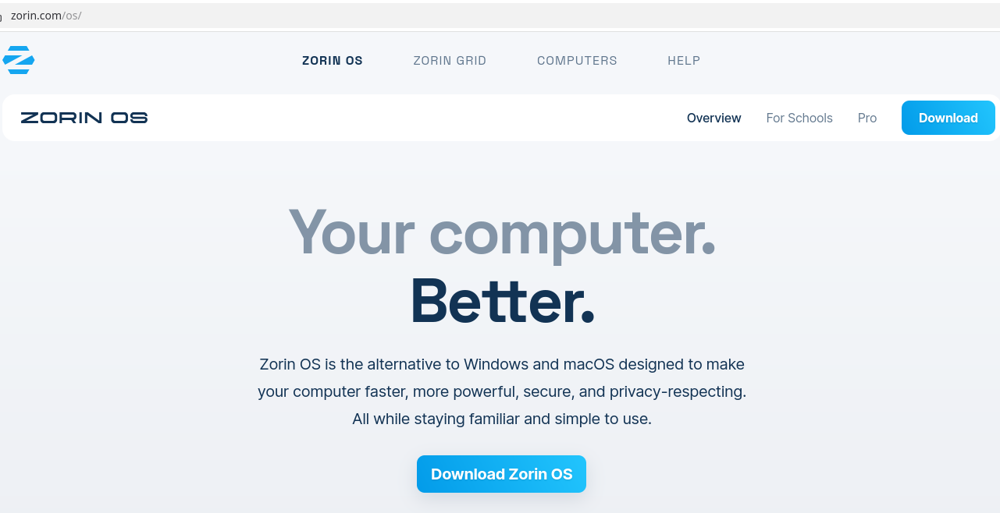
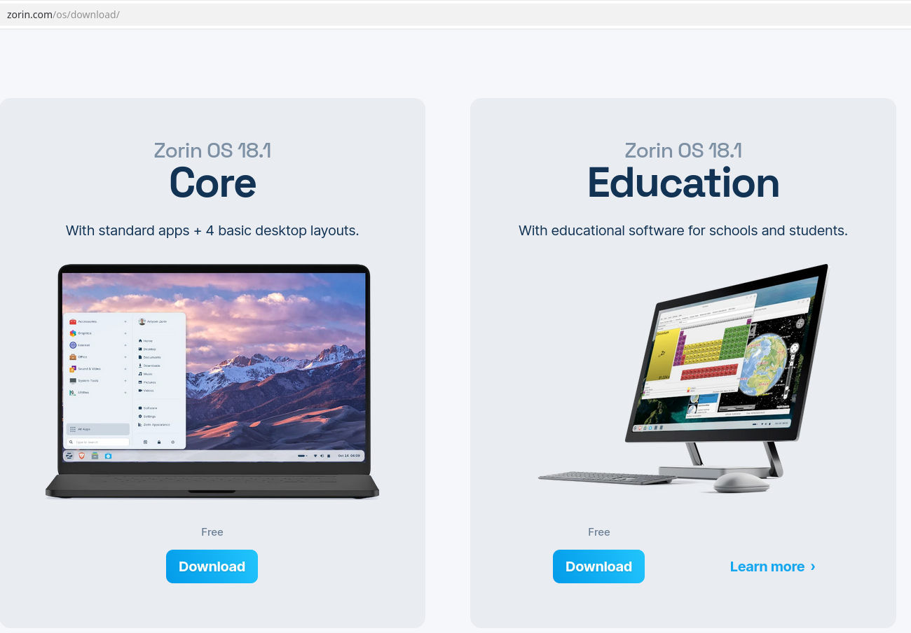
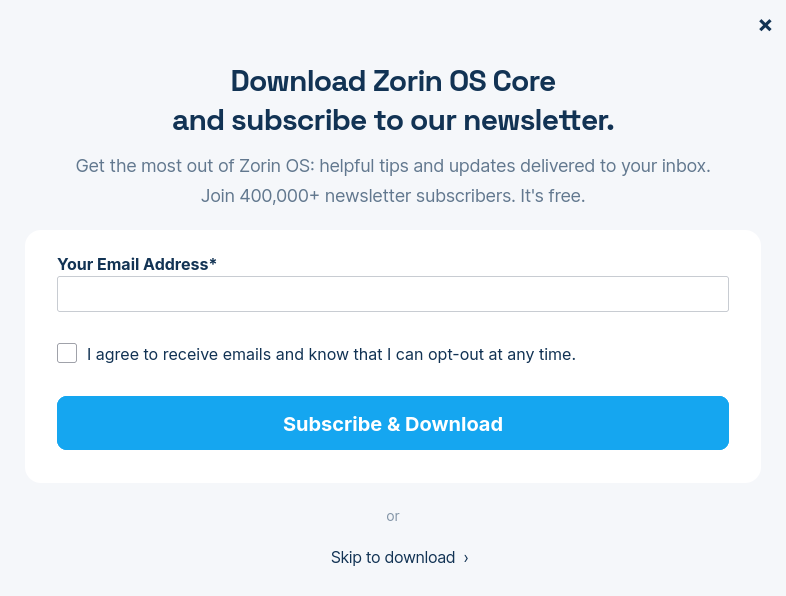
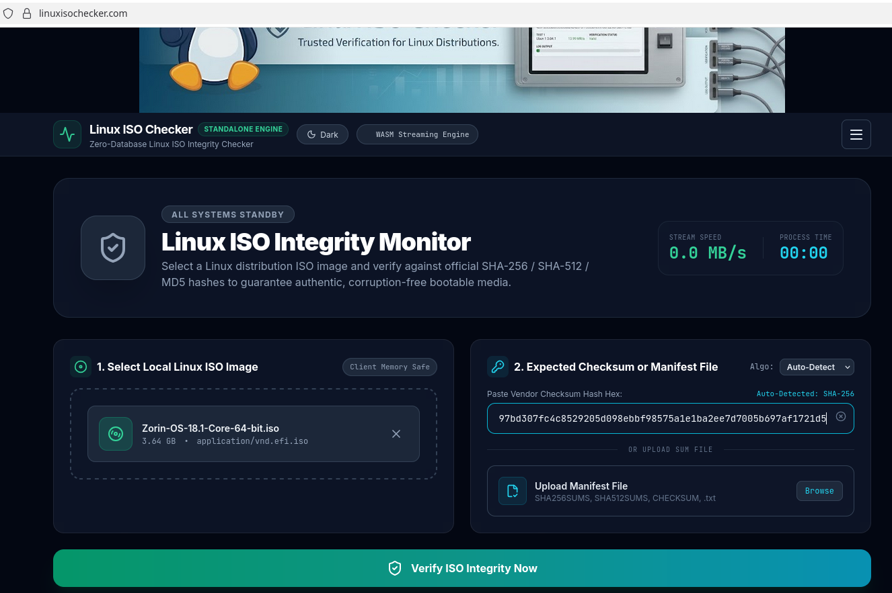
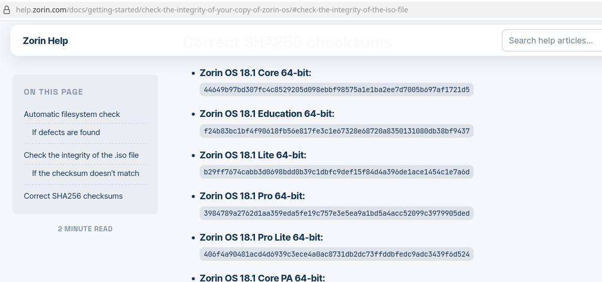
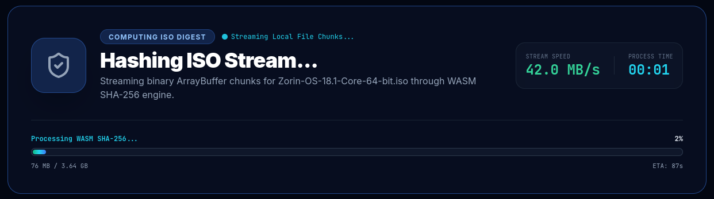
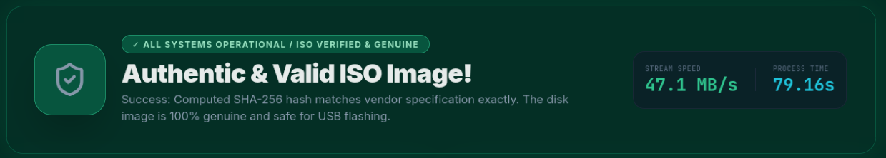

Download safety
How to verify a Zorin OS Linux Download

Visit the official Zorin OS website and click on "Download Zorin OS".

Choose the version of Zorin OS you want to download. (i.e. Zorin Pro, Zorin Core or Zorin Education)

Choose to subscribe or skip to the download.

Go to the Linux ISO Checker homepage.
Click "browse files" or drag the Zorin OS ISO image from your Downloads folder into the "Select Local Linux ISO Image" box.

Click here and copy the checksum for your version of Zorin OS into the "Expected Checksum" field.
Click "Verify" to compare the calculated checksum with the expected value.

Depending on the file size, the verification process may take a minute or two to process.
When the process has completed, you will see the results of the verification.
